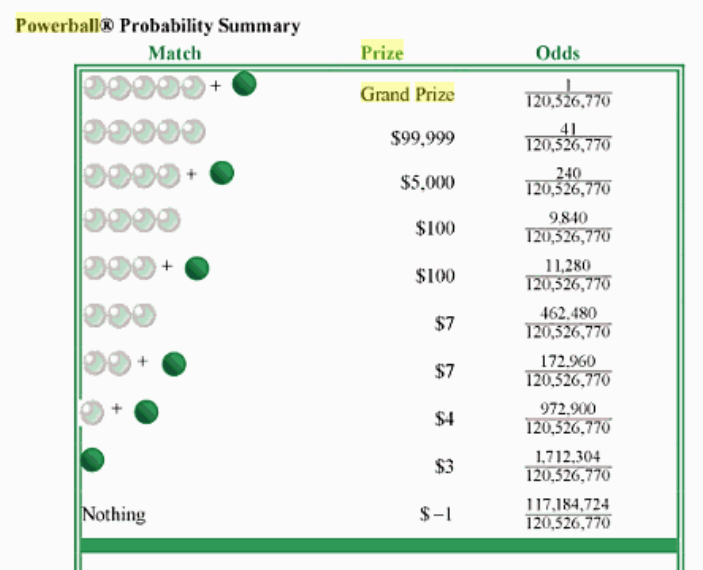

This section is aimed at students in upper secondary education in the Danish
school system, some objects will be simplified some details will be omitted.
Random Variables
A random variable is a function that assigns to each outcome in a
probability space, \((Ω,P)\), a number
$$X:Ω\to \mathbb{R}$$
and through this association we have a probability function
\(P:\mathbb{R}\to[0,1]\) that has the following mapping
$$P(X=r)=P(X^{-1}(r))=\sum_{X(ω)=r}P(ω)$$
where \(X^{-1}(r)=\{ω\in Ω:X(ω)=r\}\) is simply the event consisting of
all the outcomes that get assigned to \(r\) through our random variable.
There are many random processes where we are not actually interested in
the outcome but rather some numerical association. One example of this is
the lottery where what we're really interested in is how much we've won
and not the actual result and in the following image you can see the table
representation of the random variable that represents the US powerball
lottery.

where \(X(5B)=99,999\) with \(P(X=99,999)=\frac{41}{120,526,770}\), where
"5B" represents getting five balls with the correct numbers.
Expected Value, Variance and Standard Deviation
One immediate benefit of using random variables is that instead of
having a sample space full of random objects, we now have a bunch of
numbers, which allow us to perform numerical operations on these which
in turn allows us to assign some numerical descriptors of our process.
The first of these is the expected value related to the classical notion
of the mean, μ, which measures the weighted average of the probability
of the random values, i.e.
$$E(X)=\sum_{r\in X(Ω)}r⋅P(X=r)=μ$$
In the case of the lottery, excluding the grand-prize, this value will be
\begin{align}
E(X)=&\frac{99,999⋅41+5,000⋅240+100⋅9,840+100⋅11,280+7⋅462,480+7⋅172,960+
4⋅972,900+3⋅1,712,304-1⋅117,184,724}{120,526,770}\\
=&\frac{-96,296,173}{120,526,770}≈-0.8
\end{align}
which means that on average, you would lose 80 cents on each ticket.
This value is most valuable when it's actually descriptive of the
associated random variable, but that's not always the case. Consider
the random variable with distribution \(P(X=0)=P(X=1)=50%\), it will
have an expected value \(E(X)=0.5\), which isn't really descriptive
of the random variable, since 0.5 isn't one of its values, and not
really close to either of them. One measure of the reliability of the
expected value is to estimate the weighted distance to the expected
value for the random values. There are different ways to estimate this
but arguably the nicest one is with the variance, calculated as the
weighted squared distance to the expected value, i.e.
$$Var(X)=\sum_{r\in X(Ω)}(r-μ)^2P(X=r)$$
To account for the square, we define the standard deviation as the
square-root of this number, i.e.
$$σ(X)=\sqrt{Var(X)}$$
For the lottery variable, the variance is \(Var(X)≈3,455\) and the
standard deviation is \(σ(X)≈59\). Since this estimate for the average
distance to the mean is orders of magnitude higher than the expected
value, the expected value is useful in the sense that it expresses well
your return on investment in the long-term, but there is a huge
variation in the random values.
Theorem(Linearity of the Expected Value)
For a random variable \(X\), we can construct another
\(Y=aX+b\) and calculate its expected value and variance as follows
$$E(Y)=E(aX+b)=aE(X)+b$$
and
$$Var(Y)=Var(aX+b)=a^2Var(X)$$
To contextualize this, assume that you have a random variable that
describes temperatures in Fahrenheit and you need the results in
centigrade, then you can simply translate the expected value into
centigrade. The same is not true for the variance or standard
deviation.
Proof
Let's just get cracking
\begin{align}
E(Y)=&\sum_{r\in Y(Ω)}rP(Y=r)\\
=&\sum_{r\in Y(Ω)}rP(aX+b=r)\\
=&\sum_{r\in Y(Ω)}rP\left(X=\frac{r-b}{a}\right)\\
=&\sum_{k\in X(Ω)}(ak+b)P(X=k)\\
=&a\sum_{k\in X(Ω)}kP(X=k)+b\cancel{\sum_{k\in X(Ω)}P(X=k)}\\
=&aE(X)+b⋅1
\end{align}
where \(k=\frac{r-b}{a}\). With this in hand, we can actually define
the variance as
\begin{align}
Var(X)=&E((X-μ)^2)\\
=&E(X^2-2μX+μ^2)\\
=&E(X^2)-2μE(X)+μ^2\\
=&E(X^2)-E(X)^2
\end{align}
which in turn yields the following result
\begin{align}
Var(Y)=&Var(aX+b)\\
=&E((aX+b)^2)-(aE(X)+b)^2\\
=&a^2E(X^2)\cancel{+2abE(X)+b^2}-a^2E(X)^2\cancel{-2abE(X)-b^2}\\
=&a^2(E(X^2)-E(X)^2)\\
=&a^2Var(X)
\end{align}
∎
An identical argument can be performed with continuous variables, with
the sum and probability exchanged for an integral and a
probability density function respectively.